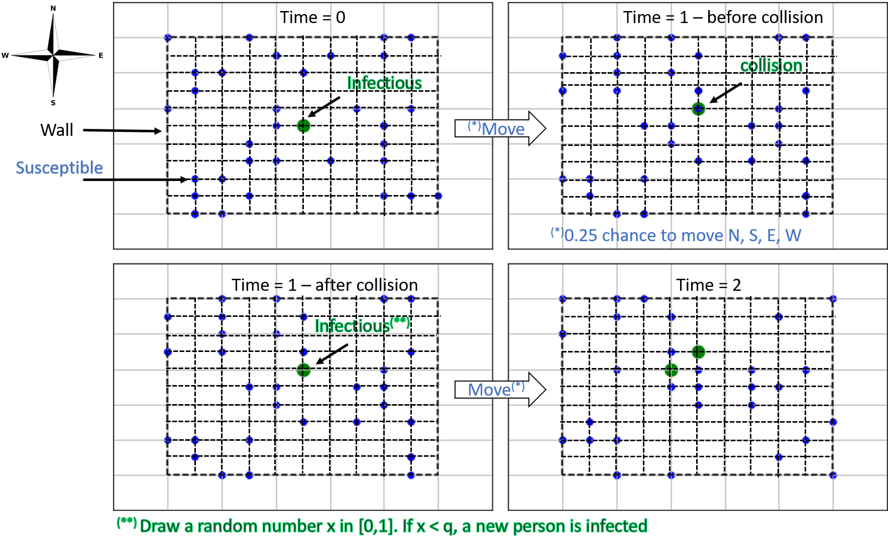

Random Corona Walk
Nov 22, 2021
Learning objectives. By completing this project, the student will:
- Model a Corona virus outbreak mechanistically with a random walk on a 2D, lattice grid.
- Use Monte Carlo techniques to quantify model uncertainty.
- Compare output from the stochastic model with deterministic ODE-models.
Finally, we remark that the random walk simulations will be CPU-intensive; performance matters in this project! Appendix B contains tips on how to make an efficient implementation. To save time, you should only re-run simulations if you absolutely have to. To this end, be careful that you do not make plots or perform additional calculations inside the function(s) that run your simulations. It might also be helpful to store simulation results into text files.
Introduction
In this project we are going to gain further insight into disease outbreaks. Previously, we studied the spreading of COVID-19 with two compartment models, the SI-model and the SEIRD-model [1]. Both of these models were deterministic, however we know that in real life, chance events are important.
A key parameter in compartment models is the effective contact rate, \( \beta \); the number of effective contacts made by any susceptible individual per unit time. An effective contact here refers to a contact in which one individual infects another. In project 3 [1], we started by assuming a constant \( \beta \), which resulted in the whole population under study being infected eventually. Next, we supposed that \( \beta \) declined exponentially as a function of time, rapidly putting an end to the disease outbreak. However, we did not give an explanation as to why such a rapid decline should occur, if at all.
To investigate further how \( \beta \) might change in time, we will in this project model interactions between sick and healthy people directly using random walk [2] [3] simulations. In this way we can easily test the impact of various model assumptions. Based on the output from the random walk simulations, we calculate values for \( \beta \), which we subsequently insert into the compartment models.
At the end of the day, all models have their limitations, and we encourage you to bring up in your analysis a) what you have learned from the random walk model, and b) how universal you think the results might be.
Exercise 1: Implement random walk \( SI \)-model
Consider a population that is confined to an isolated area, e.g., an island, a boat [4], or a city surrounded by walls. We will represent this area by a finite rectangular lattice with \( n_x\times{n_y} \) equally spaced nodes (figure 1). Each node represents a specific location, and during a simulation people move randomly between neighbouring nodes. At any given time, each person is assigned a certain disease status: "Susceptible", "Exposed", "Infectious", "Immune", "Dead", etc. As time goes by, people will change status depending on whom they meet, but also partly due to chance.
To start out simple, in this exercise we consider the case of two disease states (compartments):
- Susceptible (S): Healthy persons who stand the chance of becoming sick.
- Infectious (I): People that have the disease, and are contagious to others.
Implement the following random walk model in Python:
- At \( t=0 \), place walkers randomly on the \( n_x\times{n_y} \) rectangular lattice.
- For each time step, move all walkers, then:
- Check if they are at a legal position; move back to previous position if not.
- Save walker positions.
- Check nodes for possible susceptible-infected interactions. Go through each S-I pair in turn, and update the status of each newly infected person from \( S \) to \( I \).
Figure 1: Example illustration of walkers moving on a lattice during one time step. In the plot, \( q \) is the probability that a walker is infected.

Note that you should not plot the walker positions at every time step; that will clutter your notebook with figures! Instead, include an option to plot selected timesteps, e.g., show walker locations for every \( n \)-th timestep.
Part 1. (THE MOST DIFFICULT AND COMPREHENSIVE PART)
- Write a function and/or class that can be used to conduct a single simulation of the random walk algorithm.
Part 2.
- Discuss your implementation, and show some relevant plots (e.g. like in figure 1) where you demonstrate that the code does what it is supposed to. In particular, we would like to see that walkers do not cross boundaries, and that only walkers that meet infected individuals get infected.
np.random.seed(2) you make sure that when we run your code,
we will observe the same time-development as you do on your computer.
This is especially useful if you would like to discuss observations that
happen in a particular time step.
Exercise 2: Compare with ODE-based SI-model
In this project, \( n_x=n_y=50 \), and we assume there are \( N=683 \) people in the population. Unless otherwise specified, the probability of getting infected is set to \( q=0.9 \).
Part 1.
Suppose there is a single infectious individual initially, \( I_0 \equiv I(0) \) = 1.
- Run the random walk SI-model forward in time repeatedly; at least 100 times. For each run, take 300 time steps. (If your code is fast, you should experiment with running the code even more times, and longer if necessary)
- For each time step, calculate 1) the sample mean and 2) the sample standard deviation of the number of healthy (S) and sick (I) people in the population.
- Create a figure showing the expected time-development of the two populations. Make sure to include the computed uncertainty in the plot, e.g., by making your plot similar to figure 2.
Figure 2: Left: average of 10 simulations of the random walk \( SI \)-model. Right: average of 100 simulations. The gray shaded lines represent plus/minus one standard deviation.

Tip:
- You could use the fill_between. function in
matplotlib.
- Repeat the exercise when \( I_0=10 \). What is different now?
Recall the ODE-based, deterministic SI-model: $$ \begin{align} \tag{1} \frac{\mathrm{d}S(t)}{\mathrm{d}t} &= -\beta(t)\cdot\frac{S(t)I(t)}{N}\\ \tag{2} \frac{\mathrm{d}I(t)}{\mathrm{d}t}&=\beta(t)\cdot\frac{S(t)I(t)}{N}\,. \end{align} $$ In the case of a constant \( \beta \), the analytical solution is $$ \begin{align} \tag{3} I(t)&=\frac{N}{1+\frac{S_0}{I_0}\exp(-\beta{t})}\,, \end{align} $$ where \( S_0=S(0) \) is the number of healthy people at \( t=0 \). We want to estimate a value for the (mean) effective contact rate, \( \beta \), based on "observed" changes in the random walker populations. To this end, we combine equation (1) with a first order approximation of the derivative to yield: $$ \begin{equation} \tag{4} \beta\cdot\Delta t \approx -\frac{(S(t)-S(t-\Delta t))N}{S(t)I(t)} =-\frac{(S_n-S_{n-1})N}{S_n I_n}\,. \end{equation} $$
- Consider again the results from Part 1. For each run of the random walk SI-model, calculate \( \beta\Delta t \) using equation (4).
- Use the output to estimate a representative \( \beta \)-function. The simplest approach is to choose a constant value, otherwise you can try to find a sensible curve, \( \beta=\beta(t) \).
- Compare the mean number of infected individuals from the random walk simulation with the analytical solution to the \( SI \)-model.
Alternatively, you can try to find an analytical function that describes the average trend in the "observed" \( \beta \), e.g., \( \beta(t)=\beta_0 e^{-\lambda t} \), or something similar. However, if you choose the latter approach, you also have to modify the analytical solution by replacing the product \( \beta t \) in equation (3) with the definite integral \( \int_0^t \beta(t)dt \).
Part 4. Make some test runs where you change the number of initially infected people to be larger, e.g., \( I_0=10 \), and/or lower the infection probability by fifty per cent (i.e., use \( q=0.45 \)). Is it easier to match your results to the \( SI \) model? If yes, why?
Exercise 3: Extend to the \( SIR \)-model
The classic SIR-model is obtained from the SI-model by adding one more compartment: \( R(t) \): The number of "Recovered" individuals at time \( t \). The ODE-based, deterministic SIR-model is $$ \begin{align} \tag{5} \frac{\mathrm{d}S(t)}{\mathrm{d}t}&=-\beta(t)\cdot\frac{S(t)I(t)}{N}\\ \tag{6} \frac{\mathrm{d}I(t)}{\mathrm{d}t}&=\beta(t)\cdot\frac{S(t)I(t)}{N}-\frac{1}{\tau_\text{sick}}\cdot I(t)\\ \tag{7} \frac{\mathrm{d}R(t)}{\mathrm{d}t}& = \frac{1}{\tau_\text{sick}}\cdot I(t)\,, \end{align} $$ where \( \tau_\text{sick} \) represents the mean time of infection, i.e., the time until recovery. If \( \tau_\text{sick}\to\infty \), a person stays sick forever, and equations (5)-(7) reduce to the \( SI \)-model.
Part 1.
We would like to include the effect of recovery from the disease into the random walk model as well. This means that you have to extend your code by introducing a "recovered" state; see the Appendix for tips on how to do this. For simplicity, we shall assume that at the end of each time step, every infected person has a small probability of recovery, \( p_\text{recover} \).
- Extend your random walk model to handle the SIR-model. By default, assume that no individuals recover, \( p_\text{recover}=0 \) (i.e., so that you get the SI-model by default).
Part 2.
Let \( p_\text{recover}=0.01 \), and otherwise choose the same input parameters as for the \( SI \)-model in the previous exercise. In terms of the ODE-based SIR-model, this corresponds to a scenario with a finite time duration of the disease, \( 0 < \tau_\text{sick} < \infty \).
- Plot the average number of susceptible, infected and recovered as a function of time. (Use several model runs and include the uncertainty)
- Increase \( p_\text{recover} \) by a factor of 10. What happens now?
The basic reproduction number, or basic reproduction ratio, \( \mathcal{R}_0 \), is defined as "the expected number of secondary cases produced, in a completely susceptible population, by a typical infected individual during its entire period of infectiousness" [5] (p.365-366). It is a very important measure for estimating whether a disease can spread in a population. For the deterministic SIR-model with constant \( \beta \), it can be shown that [6]. $$ \begin{equation} \mathcal{R}_0=\beta\cdot\tau_\text{sick}\,. \tag{8} \end{equation} $$
As with \( \beta \), we can estimate \( \tau_\text{sick} \) in the SIR-model from the random walk simulations by using an appropriate finite different discretization, in this case from equation (7): $$ \begin{equation} \tag{9} \frac{\tau_\text{sick}}{\Delta t} \approx \frac{I_n}{R_{n}-R_{n-1}}\,. \end{equation} $$
- Calculate average values for both \( \beta \) and \( \tau_{sick} \) based on random walk simulations. Note that equation (9) only makes sense if \( R_{n-1}\neq R_n \).
- Include in your discussion how the disease transmission can be related to the basic reproduction number.
The following code provides an implementation of the deterministic \( SIR \)-model (along with necessary package imports):
import scipy as sp
import scipy.integrate
def SIR_model(t, *, beta, tau_s, N=683, I0=1, R0=0):
def rhs(X, t):
S, I, R = X
return [-beta*S*I/N, +beta*S*I/N - I/tau_s, +I/tau_s]
X0 = [N-I0-R0, I0, R0]
sol = sp.integrate.odeint(rhs, X0, t)
return sol
- Use the average values as input to the deterministic \( SIR \)-model. Compare the results with the random walk, and discuss.
Exercise 4: Implement your own scenario
For the final part of the project, you are going to implement your own scenario. You are free to do what ever you like. However, below we provide some possibilities for you to explore:
- Allow people to die from the disease (as in Project 3).
- If people can die, distinguish between old and young people. Let older people have a larger probability of dying. You can also let the old population have a probability of standing still (not moving)
- Add an incubation time, i.e., a certain time interval between when a person first becomes infected, and when that person actually becomes sick and can infect others (as in Project 3).
- Distinguish between asymptomatic and symptomatic infected individuals, and explore the effects of quarantine of the latter individuals.
- Add vaccination, i.e., if a person is vaccinated he/she has a much lower probability of infection.
Illustrate your findings in at least one figure, and discuss how your model scenario compares to the previously investigated cases and the real world.
Appendix A: How to implement the random walk?
As in project 2, we strongly recommend that you create a single simulator class responsible for running your model from start to finish. This allows different class functions to re-use the same variables, instead of having to pass them around all the time. At the same time, you avoid using global variables, which can be a source of hard-to-find bugs, and make your program hard to understand. Another advantage of using classes is that it becomes trivially simple to conduct parallell simulation runs, using either identical or variable model input parameters, which will be needed for this project.
Below is a suggestion for how you may start writing the __init__ method
of such a class:
class RandomWalkEpidemicSimulator:
"""
Class used to model the spreading of a contagious disease in a
population of individuals with a 2D random walk.
Each walker has a disease status which is represented by an
integer Enum. Also, a set of integer (x, y)-coordinates are
stored for each walker. The possible coordinates are:
{0, 1, ..., Lx-1} in the x-direction
{0, 1, ..., Ly-1} in the y-direction
It is only possible to move North, South, East, or West. If a
walker attempts to move outside of the physical domain, nothing
happens (i.e., a "bounce-back boundary condition" is enforced).
"""
def __init__(self,
population_size,
no_init_infected=1,
nx=50,
ny=50,
q=0.9):
"""
:param population_size: The total number of people (N).
:param no_init_infected: The number of infected people at t=0.
:param nx: The number of lattice nodes in the x-direction
:param ny: The number of lattice nodes in the y-direction.
:param q: The probability of infection (0 <= q <= 1).
"""
self.N_ = population_size
self.I0_= no_initially_infected
self.nx_= nx
self.ny_= ny
self.infection_probability_ = q
As you work through the project, you will gradually add more content to the
class; inside the __init__ function, as well as in other functions.
Position of Walkers
At each time step, we need to know the positions of all walkers. This becomes simple if we store the walker \( (x,y) \)-coordinates in a 2D NumPy array. To generate random starting positions, we simply draw one \( x \)-coordinate and one \( y \)-coordinate for each walker:
self.Walkers_ = np.random.randint(0,
[self.nx_, self.ny_],
size=(self.N_, 2))
To understand what the code does, choose some small values for \( n_x \), \( n_y \), and \( N \), and inspect the result.
Move walkers
It is important that the walkers move randomly, and only one step in either the \( x \)- or the \( y \)-direction. There are many ways to achieve this. One method is to draw a random integer \( u \) between 1 and 4, and to say, e.g.:
- If
u==1, move East: add \( [1, 0] \) to the \( (x, y) \)-coordinates, - If
u==2, move North: add \( [0, 1] \), - If
u==3, move West: add \( [-1, 0] \), - If
u==4, move South: add \( [0, -1] \).
next_steps = np.array([[0, 1], [1, 0], [1, 0], [0, 1], [-1, 0]])
According to the scheme proposed above, these steps corresponds to the first and fourth walkers moving North, the second and third moving East, and the fifth moving South. Since all directions are stored in array of the same size as the population, we can update the walker positions simultaneously with a simple addition:
self.Walkers_ += next_steps
An alternative method is to update each of the four directions separately. A situation where this could be relevant is when we have drawn the random integers representing directions, but have not yet converted them into \( (x, y) \)-coordinate changes:
proposed_directions = np.array([2, 1, 1, 2, 3])
We can use boolean masking to find out which walkers move in which direction:
move_east = (proposed_directions == 1)
move_north = (proposed_directions == 2)
move_west = (proposed_directions == 3)
move_south = (proposed_directions == 4)
Finally, we update the coordinates:
Walkers_[move_east] += [1, 0]
Walkers_[move_west] -= [1, 0]
Walkers_[move_north] += [0, 1]
Walkers_[move_south] -= [0, 1]
Revert illegal moves (Bounce-back condition)
Before checking for new infections, we need to make sure that none of the walkers are outside of the grid. We can achieve this by keeping track of walker coordinates from the previous time step: For each walker, we check whether that walker is at a legal position; if not, revert back to the old coordinates. This is often called a bounce-back boundary condition.
To extract the old \( (x,y) \)-coordinates, we can type:
self.Walkers_Old_ = self.Walkers_.copy()
Note the use of copy() here. If we had written
self.Walkers_Old_ = self.Walkers_ # Wrong code!!!
it would not work, because arrays are
mutable
objects in Python.
This means that if Walkers_ had been assigned directly to Walkers_Old,
both variable names would point to the same underlying object in memory.
Since the arrays contain objects of an immutable type (int), one way to avoid
this problem is to create a shallow copy with copy(). In other situations,
a deepcopy() operation might
be needed; e.g., if we stored objects of a custom class in the Walkers_ array
(instead of integers).
To check for legal positions, the most obvious thing to do is to use a for loop:
# Note: Assumes we have already created a class (instance) function
# "is_at_illegal_position" that checks whether the coordinates
# of a given walker is valid.
for idx in range(self.N_):
if self.is_at_illegal_position(idx):
self.Walkers_[idx] = self.Walkers_Old_[idx]
# Remember to save the new positions for the next time step
self.Walkers_Old_ = self.Walkers_.copy()
However, this method is likely to be very slow. Instead you might want to use boolean masking to correct the position of each walker without using for loops. See Appendix B for more details.
Figure 3: An illustration of the bounce-back boundary condition. The wall is located to the east, and a move in the east direction is illegal.

State of Walkers
We still have no information about what type (susceptible, infected, recovered, dead, etc.) the individual walkers are. To represent the possible states, we suggest defining a set on named integer constants. These could for example be members of the simulator class (either class attributes or instance attributes), e.g.:
self.SUSCEPTIBLE_ = 0
self.INFECTIOUS_ = 1
self.RECOVERED_ = 2
Alternatively, they could be stored in a separate enumeration class:
from enum import Enum
class DiseaseStatus(Enum):
SUSCEPTIBLE = 0
INFECTIOUS = 1
RECOVERED = 2
The following example shows how you can use this kind of approach in your code:
# First, let all walkers be in the susceptible compartment:
self.State_ = np.full(self.N_, self.SUSCEPTIBLE_)
# Next, change walker number 0, 1, 2, ..., I0-1 to be infectious:
self.State_[0:self.I0_] = self.INFECTED_
As the simulation is progressing, the State_ array will be continually updated.
At any given time, we can count the total number of infected, recovered etc.
by
no_susceptible = np.sum(self.State_ == self.SUSCEPTIBLE_)
no_infectious = np.sum(self.State_ == self.INFECTIOUS_)
no_recovered = np.sum(self.State_ == self.RECOVERED_)
When using named integers (Enums), the code becomes much easier to read than
if you work with hard-coded integers; it means you will never have to
remember that 0=SUSCEPTIBLE and 1=INFECTIOUS etc..
Also, the approach can easily handle the addition of more compartments,
or changing the numbering scheme later on. For instance, suppose
you want to use to the following numbering instead:
self.SUSCEPTIBLE_ = 0
self.EXPOSED_ = 1
self.INFECTIOUS_ = 2
self.RECOVERED_ = 3
self.DEAD_ = 4
If you wrote your code referring directly to the integers, you would have
to change each occurrence of 1 to 2, and each occurence of 2 to 3.
Obviously, this is much more error-prone than the Enum-approach!
Checking for new infections
The "collision step" is crucial for performance. A naive implementation would be something like the following:
def collide_extremely_slowly(self): # note: class (instance) function
# Get (x,y)-coordinates of susceptibles & infectious people
S_coord = self.Walkers_[self.State_== self.SUSCEPTIBLE_]
I_coord = self.Walkers_[self.State_ == self.INFECTIOUS_]
no_infected = len(I_coord)
for infected_idx in range(no_infected):
for walker_idx in range(self.N_):
walker_is_susceptible = (self.State_[walker_idx] == self.SUSCEPTIBLE_)
infected_at_same_location = np.all(I_coord[infected_idx] == Walkers_[walker_idx])
if walker_is_susceptible and infected_at_same_location:
q = np.random.uniform(0, 1)
if q < self.infection_probability_:
self.State_[walker_idx] = self.INFECTIOUS_
With the above approach, we are doing a lot of superfluous checks, every single time step of every simulation. In the best case scenario, we are checking each walker once every time step (this happens when there is a single infected person). In the worst case scenario, when everyone is infected, we are checking \( N^{2} \) combinations of walkers. With \( N=683 \), this means we are doing 466489 comparisons each and every time step! Obviously, this is not feasible.
The strategy of starting by looping over infected individuals is probably smart, however; at least initially, when there are few of them. However, you will need to avoid doing pointless checks.
Appendix B: Speeding up the code
A good rule is to never optimize code too early; first, make sure the code works as expected, without thinking too much about performance. Later on, you might find out that the code runs too slowly. Below are some tips on what could be improved.
- It is important to avoid loops whenever possible. For instance, drawing random numbers one at a time inside a loop tends to be very slow:
for k in range(0, N):
x = np.random.uniform(0, d)
y = np.random.uniform(0, d)
Instead, take advantage of built-in functionality in Numpy to draw all the numbers at once:
x = np.random.uniform(0, d, size=N)
y = np.random.uniform(0, d, size=N)
- When locating walkers at illegal positions, or finding positions where infectious and susceptible individuals meet (this step is crucial for speed!), consider using numpy.where.
- You can also use boolean masking, for example:
too_large_x = self.Walkers_[:, 0] >= self.nx_
too_small_x = self.Walkers_[:, 0] < 0
wrong_x = np.logical_or(too_large_x,too_small_x)
# alternatively you can use
wrong_x = too_large_x | too_small_x # boolean "OR" applied elementwise
.. # TO DO: add more code here (check y-positions too..)
- Another example: Suppose we have created a boolean array of size
N_calledat_illegal_pos, where an entry is True iff the corresponding walker is outside the grid. Then, we can correct the illegal moves in a single line without a loop:
self.Walkers_[at_illegal_pos] = self.Walkers_Old_[at_illegal_pos]
- Numba translates python functions to optimized machine code, and might be something to look into.
- While it is often smart to use classes, avoid creating too many of them. For example, it might be tempting to represent individual walkers with a class, but our guess is that this will slow down the code considerably unless one is very careful. Accessing a class and its members adds extra overhead, which is why we prefer the approach of using "global arrays" to hold information about the walkers.
Guidelines for project submission
You should bear the following points in mind when working on the project:
- Start your notebook by providing a short introduction in which you outline the nature of the problem(s) to be investigated.
- End your notebook with a brief summary of what you feel you learned from the project (if anything). Also, if you have any general comments or suggestions for what could be improved in future assignments, this is the place to do it.
- All code that you make use of should be present in the notebook, and it should ideally execute without any errors (especially run-time errors). If you are not able to fix everything before the deadline, you should give your best understanding of what is not working, and how you might go about fixing it.
- Avoid duplicating code! If you find yourself copying and pasting a lot of code, it is a strong indication that you should define reuseable functions and/or classes.
- If you use an algorithm that is not fully described in the assignment text, you should try to explain it in your own words. This also applies if the method is described elsewhere in the course material.
- In some cases it may suffice to explain your work via comments in the code itself, but other times you might want to include a more elaborate explanation in terms of, e.g., mathematics and/or pseudocode.
- In general, it is a good habit to comment your code (though it can be overdone).
- When working with approximate solutions to equations, it is very useful to check your results against known exact (analytical) solutions, should they be available.
- It is also a good test of a model implementation to study what happens at known 'edge cases'.
- Any figures you include should be easily understandable. You should label axes appropriately, and depending on the problem, include other legends etc. Also, you should discuss your figures in the main text.
- It is always good if you can reflect a little bit around why you see what you see.
Bibliography
- A. Hiorth and O. Nødland. Spread of Infectious Diseases, 2021, (Accessed on 19/11/2021), https://github.com/ahiorth/CompEngineering/blob/master/projects/H21/project3/pdf/project3.pdf.
- K. Pearson. The Problem of the Random Walk, Nature, 72(1867), pp. 342, 1905.
- E. A. Codling, M. J. Plank and S. Benhamou. Random Walk Models in Biology, Journal of the Royal society interface, 5(25), pp. 813-834, 2008.
- Wikipedia. COVID-19 Pandemic on Diamond Princess, 2021, (Accessed on 19/11/2021), https://en.wikipedia.org/wiki/COVID-19_pandemic_on_Diamond_Princess.
- O. Diekmann, J. A. P. Heesterbeek and J. A. Metz. On the Definition and the Computation of the Basic Reproduction Ratio R0 in Models for Infectious Diseases in Heterogeneous Populations, Journal of mathematical biology, 28(4), pp. 365-382, 1990.
- P. v. d. Driessche. Reproduction Numbers of Infectious Disease Models, Infectious Disease Modelling, 2(3), pp. 288-303, 2017.